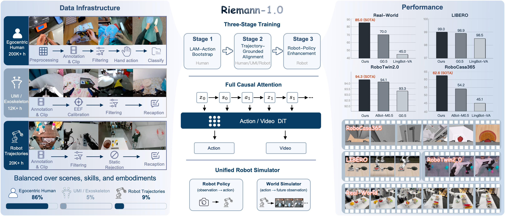
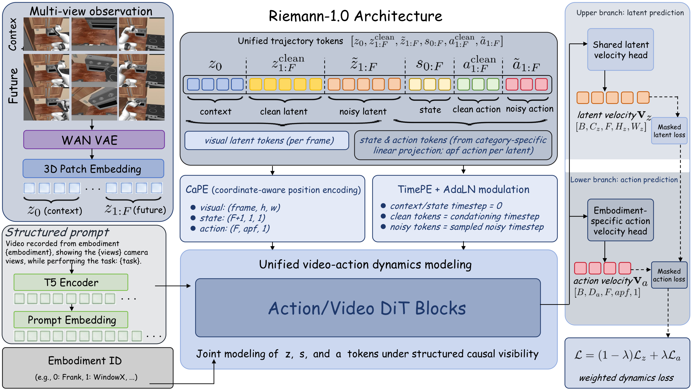
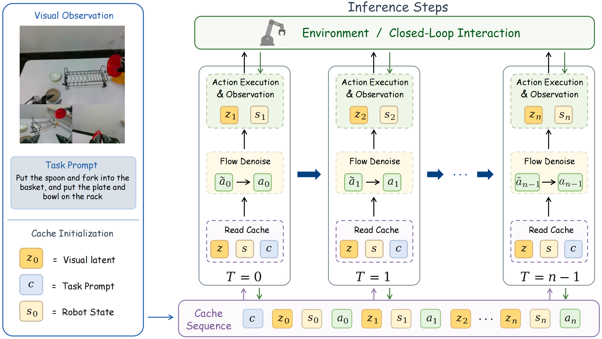

Fully causal WAM
Jointly model actions, multi-view observations, and robot states in the causal order required by real control.
 Contact
ContactWORLD ACTION MODEL · RIEMANN-1.0
A fully causal action-video model that learns world dynamics and robot control together—built for complex, long-horizon tasks in the real world.

01 · THE MODEL
Riemann-1.0 converts heterogeneous embodied experience into a generalist, closed-loop robot policy for precise, long-horizon manipulation.

Jointly model actions, multi-view observations, and robot states in the causal order required by real control.
Learn from egocentric video, action–trajectory supervision, and robot-specific policy enhancement.
Use one action-video model for executable action prediction and future video generation.
LONG-HORIZON TASKS
Autonomous task execution after lightweight post-training, without complex data-engineering pipelines such as DAGger.
Clothes
Pull, fold, and stack a deformable garment.
Cube sequence
Stack multiple colors in the requested order.
Kitchen cleanup
Complete a multi-step clearing, wiping, and organization task.
Brand philosophy, company profile, milestones, core R&D team, credentials, partners, and benchmark customers are CMS-driven.
Place the stuffed toy, tissue pack, charger, cube, and black tape into the box, then place the pen into the pen holder.
Fold this deformable garment on the table through bimanual manipulation.
Stack the cubes with the right hand in the order of blue, yellow, red, green, and green.
Put the spoon and fork into the basket, and place the plate and bowl on the rack.

Place everyday objects into the box, then place the pen into the pen holder.
Fold a deformable garment on the table through coordinated bimanual manipulation.
Stack multiple colored cubes with the right hand in the requested order.
Sort utensils into the basket and place the plate and bowl on the rack.
REAL-WORLD CAPABILITIES
Three real-world demonstrations show how Riemann-1.0 turns language, changing conditions, and multi-stage goals into executable action.
Given an indirect instruction, Riemann-1.0 infers the intended object and completes the pick-and-place task.
When the target placement is blocked, Riemann-1.0 adapts its execution and continues toward task completion.
Riemann-1.0 completes a multi-stage coffee task spanning precise capsule placement, machine operation, dual-arm coordination, and stable serving.
Held-out real-robot evaluations test compositional generalization by recombining seen objects into unseen tasks, and OOD zero-shot transfer with unseen objects and unseen tasks without additional demonstrations.
Place both bowls stacked on the plate.
Place the fork into the pen holder.
First, place the green cube on the red plate, then place the purple cube in the green bowl, and finally place the red cube on the red plate.
Put the red cube on the yellow plate.
Put the white napkins into the trash can.
Put the Rubik cube into the basket.
Put the towel into the basin.
Fold the blue towel and place it on the right side.
Riemann-1.0 reaches 99.0% average success rate on LIBERO, 94.3% on RoboTwin 2.0, and 62.6% on RoboCasa365.
DATA INFRA
Riemann-1.0 converts 232K+ hours of heterogeneous data into action-level supervision through hierarchical VLM segmentation, instruction and action annotation, quality filtering, 3D hand-action reconstruction, semantic categorization, and scene-skill balancing. Egocentric human videos provide broad interaction priors, while UMI / exoskeleton demonstrations and robot trajectories progressively ground those priors in executable control.

CAUSAL VIDEO-ACTION ARCHITECTURE
Riemann-1.0 preserves the causal order of interaction with a unified autoregressive factorization over action and visual latents. Multi-view observations, robot states, and embodiment-specific action tokens share an Action/Video DiT with structured causal visibility, preventing future observation leakage while retaining teacher-forced training.

Learn broad world dynamics from human and embodiment videos before robot-policy grounding.
Align visual dynamics with UMI, exoskeleton, and robot trajectory demonstrations.
Improve executable action prediction with high-quality robot interaction trajectories.
INFERENCE
Riemann-1.0 denoises the next action chunk from a growing visual-state cache. After execution, real observations are encoded back into context tokens; long rollouts use a sliding temporal window while preserving the same causal semantics.

UNIFIED ROBOT SIMULATOR
The same causal model supports two inference modes. Robot Policy maps observed history to executable actions, while World Simulator predicts the visual consequences of input action trajectories for rollout inspection and action-plan comparison.
Riemann-1.0 can act as a robot policy to use observations (images + states) and task prompt to denoise the next action chunk.
Given the first frame image, prompt, and input future actions, Riemann-1.0 can act as a world simulator to roll out action-consistent future observations.